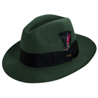
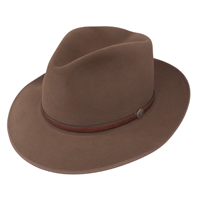
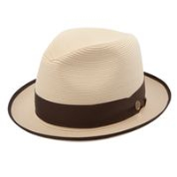
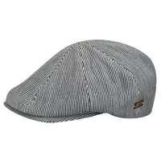
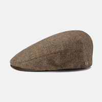
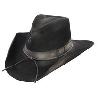
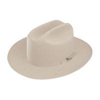
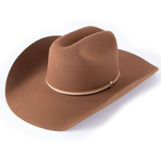
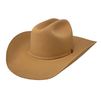

Hats that keep Arizona Covered
Heritage Hats provide quality custom made and brand name hats with a variety of style for customers in the Phoenix-Scottsdale-Cave Creek Arizona areas and nationwide. Our customers include local residents, both full and part-time along with our tourist visitors.
Australian Outback and Hiking Hats
Show more $79.95 Australian Breezer (takes to sample product page)
$79.95 Australian Breezer (takes to sample product page)- $39.95 Henschel Breezer 5301 (Assorted Colors)
- $225.00 Akubra Banjo Patterson
- $169.00-225.00 Akubra Coober Pedy Hat
- $225.00 Akubra Territory
- $149.95 Australian Panama
- $79.95 Head n Home Cabana
- $99.95 Head n Home Monterey
- $85.00 Bigalli outdoor (assorted colors and styles)
- $79.95 Brixton (assorted colors and style)
- $69.95 Scala outdoor hats (assorted colors and hats)
Fedora Felt Hats
Show more- $380.00 Borsalino #390299 100% fur wide brim
- $370.00 Borsalino #390131 Black
- $380.00 Borsalino #390131 Brown small brim 100% fur
- $69.95 Dorfman Pacific WF536
- $69.95 Pacific WF506 Derby
- $175.00 Stetson Downs (Fur)
- $185.00 Stetson Indian JonesTemple (Fur)
- $185.00 Stetson Roadster (Fur)
- $185.00 Stetson Saxon (Fur)
- $210.00 Stetson Stratoliner (Fur)
.png) $69.95 Dorfman Pacific Dobbs DF3 (Assorted colors)
$69.95 Dorfman Pacific Dobbs DF3 (Assorted colors)- $210.00 Stetson Sutley (Fur)
- $175.00 Dobbs Jet 707, 1 7/8" brim
- $69.95 Dorfman Pacific DF10 (Assorted colors)
- $69.95 Dorfman Pacific WF506 Derby
 $69.95 Dorfman Pacific WF509 Pork Pie
$69.95 Dorfman Pacific WF509 Pork Pie- $69.95 Dorfman Pacific WF529
- $380.00 Borsalino #390054
.png) $69.95 Dorfman Pacific WF536 (Assorted colors)
$69.95 Dorfman Pacific WF536 (Assorted colors)- $210.00 Stetson Chatham Fedora
Fedora Straw Hats
Show more- $115.00 Stetson Latte
- $115.00 Dobbs Side Eye
- $115.00 Dobbs Multi line
- $79.95 Pork Pie (Various colors)
- $130.00 Stetson fedora
- $79.95 Bailey Casual (Assorted Colors) Mannes style
- $135.00 Open road hemp fedora
- $85.00 Bailey Greyson (Assorted Colors)
- $95.00 Bailey Copper Wilshire
- $99.50 Dobbs Rosebud (Assorted colors)
- $125.00 Stetson Andover
- $120.00 Stetson Hanson
- $120.00 Stetson Guthrie
- $79.95 Bailey BIlly (Assorted Colors)
Caps
Show more- $45.00 AeGean Fisherman Cap
- $65.00 Bailey Almas Newsboy
- $49.95 Bailey Redford
- $45.00 Brixton Houlihan
- $45.00 Brixton Fiddler Cap
- $45.00 Brixton Brood Snap Cap
- $45.00 Kangol 504 (Assorted Styles and Colors)
- $55.00 Kangol 507 (Assorted Styles and Colors)
- $36.00 Kangol Cadet Cap
- $85.00 Mayser Jasper Cap
- $85.00 Mayser Shetland Lennant Cap
- $95.00 Mayser Simon Plus (Earflaps)
Western Felt Hats
Show more- $259.95 Stetson Pawnee (Assorted colors: 41/4" crown Australian brim)
- $489.00 Resistol Black Gold
_5_brim_Open_crown_51_2 _crown.png) $299.00 Resistol Chute (Assorted colors) 5" brim, Open crown, 51/2 " crown
$299.00 Resistol Chute (Assorted colors) 5" brim, Open crown, 51/2 " crown- $169.95 Resitol Revenger (The Gambler) (Assorted colors) 31/2" brim
- $298.00 Seratelli Elko Gambler (Assorted colors) 4" brim
- $299.00 Seratelli Gus, Lonesome Dove (Assorted Colors)
- $179.95 Stetson Desperado (Assorted colors) - Treated to look aged
- $219.95 Stetson Open Road (Assorted colors)
- $390.00 Stetson Shasta 10X beaver - Mist Grey 4" brim
- $279.95 Stetson Skyline
- $269.95 Stetson Carson Cattleman
- $269.95 Stetson Carson Teardrop
- $279.95 Stetson Diamond Jim, Black, low crown
- $900.00 Seratelli 100Xbeaver
- $239.95 Stetson Hobbs, Chestnut
 $550.00 Stetson El Patron 30X
$550.00 Stetson El Patron 30X- $279.95 Stetson Pagosa, Butterscotch
- $269.95 Resistol, The SP
- $269.95 Resitol Royal Flush Black
Western Straw Hats
Show more- $139.95 Stetson Centennial
- $139.95 Crowley
- $139.95 Jackson
- $139.95 Martel
- $145.00 Resistol Point Rider 5" brim
- $129.95 Resistol Hancock 4 1/4 inch Brim
- $139.95 Resistol Palo Duro 4 1/4 inch Brim
- $139.95 Resistol Rusty Nail 4 1/2" Brim
- $129.95 Resistol Warner
- $139.95 Stetson Carson
- $129.95 Stetson Diamond Jim
- $129.95 Stetson Grant
- $129.95 Stetson Royal Flush
- $139.95 Stetson Rancher
- $145.00 Stetson Open Road
- $135.00 Stetson Gus
- $165.00 Stetson Open Road Hemp
Panama Hats
Show more $149.95 Dorfman Pacific P208
$149.95 Dorfman Pacific P208- $125.00 Dorfman Pacific P212
- $165.00 Stetson Center Crease
- $125.00 Bailey Thurman
- $120.00 Bailey Panama Hanson
- $149.95 Dorfman Pacific P180
- $149.95 Dorfman Pacific Panama P122
- $149.50 Dorfman Pacific Panama P179
- $149.95 Dorfman Pacific Panama P181
- $145.00 Scala 122 Panama
- $450.00 Montecristi Fino Panama
- $135.00 Ecua Andino Panama
- $149.95 Bigalli Panama
About Heritage Hats
The name Heritage Hats was born because I wanted a name that would express my passion to learn and carry on a skill and tradition about the way of life and the traditional culture of the southwest. I moved to Phoenix from Rockford, Illinois in 1981 and became infatuated with the western lifestyle, particularly the life of the cowboy. I befriended two older gentlemen who taught me the techniques and skills of cleaning and blocking western hats for cowboys. Steve Speros who owned Phoenix Exclusive Hatters and George Falkedes who owned Athens Hats became my mentors and taught me how to skillfully master the techniques and skills necessary to become a restoration expert. I am proud to have inherited their original cleaning and blocking equipment from 1912.
As I continued to perfect my techniques and skills, I started selling western hats from my pickup truck on the weekends at rodeos and I opened my first retail store in 1983. Today, Heritage Hats is the largest hat store in Arizona with a large variety of hats including; western felt and straws, fedora felt and straws, panamas, Australians and other popular hats and caps. Our retail space covers 3200 square feet with 2 showrooms. Our restoration workshop is in the back of the store where I continue to do cleaning and blocking on the premises. We also custom make hats; some of our most famous customers include Ronald Reagan and George Burns.
You can view the interior of our store on our Take a Tour page or by viewing the different videos on the site.
Rich Glisson Owner
Hat Care Tips
At Heritage Hats, we know buying a hat is an investment. It also shows your individual style and carries memories with it throughout your life. It is often handed down through generations so we know that keeping good care of your hat is important for both the fabric of the hat and the fabric of your life. It is also used as skin cancer protection which is so important, so here are some simple care tips to keep your hats looking their finest for many years to come:
- Use a soft-bristled brush to dust hats regularly. A damp terrycloth bath towel will also remove dust. Rub the surface of the hat in a circular, counterclockwise motion.
For felt hats
- Use a gum eraser on stains too deep to remove with a brush or towel. If sponging doesn't remove all the marks, try sanding with 100-grit paper. Move the sandpaper, very gently, in counterclockwise d irection. Never press into the hat, and never press the hat into the paper.
- Do not take your hat on and off your head by handling the crown. Instead, use the front and back of the brim next to the crown bend.
- Do not set your hat down on its brim, which causes it to flatten and lose its shape.
- Don't leave your hat anywhere where it gets very hot, such as an enclosed vehicle.
For straw hats:
- Wipe with a soft cloth dipped in warm suds made with a synthetic detergent or soap.
- Rinse with another cloth barely dampened with plain water and then allow to air dry.
- Do not get a straw hat too wet or you could damage it.
Restoration/Cleaning/Blocking Services
Heritage Hat Cleaners is located on the premises of our retail store. We are fully equipped to offer a complete range of hat cleaning/blocking and restoration services that can restore your older hat or make style changes to a hat that you purchase at Heritage Hats. Sweatbands and linings can also be replaced.
We are the leading hat cleaning and blocking service in the Phoenix-Scottsdale-Cave Creek area and serve both individual and commercial customers. Hats are cleaned and blocked to your specific instructions. We can clean and block most felt hats including western, fedora and dress hats. Some familiar names who have entrusted us with their hat cleaning needs have been actor George Burns and local celebrities Wallace and Ladmo. We also did the hat restoration for the Frank Lloyd Wright Foundation.
This service is not offered for canvas or straws but you can find some do-it-yourself tips for these materials on our Hat Care Tips section.
The cleaning process includes: complete dry cleaning your hat, re-blocking and shaped to the style you desire, and replacing your sweatband if necessary. We strive to do all necessary services within 3 working days.
Service Options and Pricing
Cleaning and blocking service - $60.00
Re-shaping crown - $25.00
Re-shaping brim - $20.00
Sweatband replacement - $45.00
Contact Us
Location
13602 N Cave Creek Road
Phoenix, Arizona 85022
Phone
(602) 867-3323
Hours of Operation
-
Monday - Saturday: 10:00 AM - 5:00 PM
Sunday: Closed
If you have further questions, please go to our contact form.
Visa and MasterCard accepted.
Event & Convention Services
Convention Hat Fitter
Heritage Hats is the largest hat store in Arizona and can handle your hat fitting needs for your local convention or event in the Phoenix-Scottsdale-Tucson-Sedona Arizona areas. We have the largest hat selection in the state so we can meet your needs; whether you are looking for the traditional western hat to meet the wild west theme or hats and caps that will meet the different preferences of a golfer. If you are hosting a cancer related event, we can offer hats that have UPF 50+ and 5 " brims to promote skin cancer awareness which is so appropriate for the "Valley of the Sun".
Hats are such an icon for the Arizona desert and has been a part of the tradition of the west since the early 20th century. That's what makes the hat the perfect souvenir for your event. Our hats will provide your attendees with sun protection while they are in Arizona and make sure they are comfortable and fashionable. Hats are trending everywhere and their popularity will make a great addition to your event.
Heritage Hats has been in business 31 years and began our event planning at local rodeos. When the owner Rich Glisson opened his retail store in 1983, he decided to become the preferred vendor to help assist other event planners. We understand the importance of planning, organizing and executing a successful event. We will work personally with your event planner and strive to be an extension of your event team.
If you are planning an event in the local area and choose to make Heritage Hats your partner for your event, you will be working with Rich, the owner of Heritage Hats for planning, ordering and delivery purposes. This will not only ensure you receive the personal attention you deserve and a contact you can depend on, but he can suggest options to make sure you stay within your budget. We only work with the largest and best hat manufacturers in the industry so you know you are offering an item of high quality. For larger groups, we will provide a professional and knowledgeable staff to be on site for the event.
We work on events from 25-1000 attendees and will strive to make this part of your convention or event planning stress free. For more information on our great convention city, please visit phoenix.gov